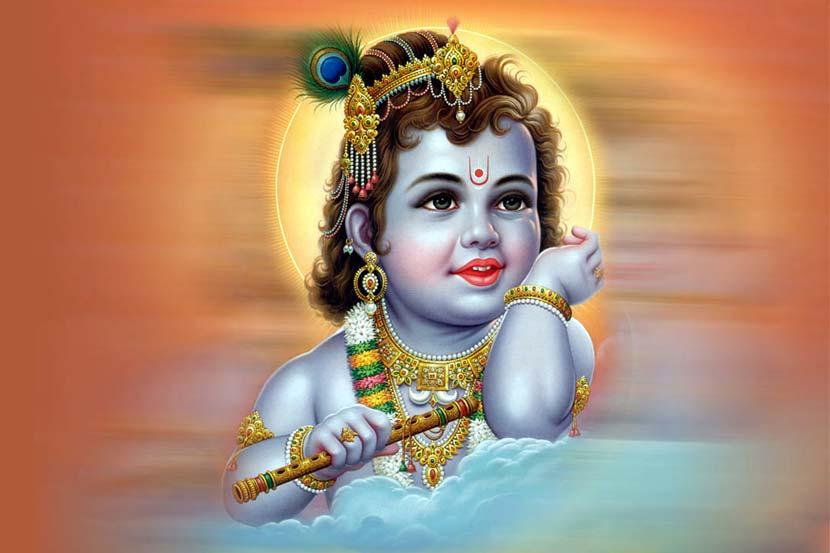

Krishna Janmashtami,
also known simply as Janmashtami or Gokulashtami, is an annual Hindu festival that celebrates the birth of Krishna, the eighth avatar of Vishnu.[3] It is observed according to Hindu luni-solar calendar, on the eighth day (Ashtami) of the Krishna Paksha (dark fortnight) in Shraavana of the lunar Hindu Calendar and Krishna Paksha in Bhadrapad of the lunisolar Hindu Calendar, which overlaps with August and September of the Gregorian calendar.[3]
It is an important festival particularly to the Vaishnavism tradition of Hinduism.[4] Dance-drama enactments of the life of Krishna according to the Bhagavata Purana (such as Rasa lila or Krishna Lila), devotional singing through the midnight when Krishna was born, fasting (upavasa), a night vigil (ratri jagaran), and a festival (mahotsava) on the following day are a part of the Janmashtami celebrations.[5] It is celebrated particularly in Mathura and Vrindavan, along with major Vaishnava and non-sectarian communities found in Manipur, Assam, West Bengal, Odisha, Madhya Pradesh, Rajasthan, Gujarat, Maharashtra, Karnataka, Kerala, Tamil Nadu, Andhra Pradesh and all other states of India.[3][6]
Krishna Janmashtami is followed by the festival Nandotsav, which celebrates the occasion when Nanda Baba distributed gifts to the community in honour of the birth.[7]
South India
Gokula Ashtami (Janmashtami or Sri Krishna Jayanti) celebrates the birthday of Krishna. Gokulashtami is celebrated with great fervor in South India.[citation needed]
In Tamil Nadu, the people decorate the floor with kolams (decorative pattern drawn with rice batter). Geetha Govindam and other such devotional songs are sung in praise of Krishna. Then they draw the footprints of Krishna from the threshold of the house till the pooja room, which depicts the arrival of Krishna into the house.[36] A recitation of Bhagwadgita is also a popular practise. The offerings made to Krishna include fruits, betel and butter. Savories believed to be Krishna's favorites are prepared with great care. The most important of them are Seedai, Sweet Seedai, Verkadalai Urundai. The festival is celebrated in the evening as Krishna was born at midnight. Most people observe a strict fast on this day and eat only after the midnight puja.
Toddler dressed like Krishna
In Andhra Pradesh, recitation of shlokas and devotional songs are the characteristics of this festival. Another unique feature of this festival is that young boys are dress up as Krishna and they visit neighbors and friends. Different varieties of fruits and sweets are first offered to Krishna and after the puja, these sweets are distributed among the visitors. The people of Andhra Pradesh observe a fast too. Various kinds of sweets are made to offer Gokulnandan on this day. Eatables along with milk and curd are prepared to make offerings to Krishna. Joyful chanting of 's name takes place in quite a few temples of the state. The number of temples dedicated to Krishna are few. The reason being that people have taken to worship him through paintings and not idols.[citation needed]
Popular south Indian temples dedicated for Krishna are Rajagopalaswamy Temple in Mannargudi in the Tiruvarur district, Pandavadhoothar temple in Kanchivaram, Sri Krishna temple at Udupi, and the Krishna temple at Guruvayur are dedicated to the memory of Vishnu's incarnation as Krishna. Legend says that the Sree Krishna Idol installed in Guruvayur is from Dwarka which is believed to be submerged in the sea.
Puja Procedure
QUICK LINKS: